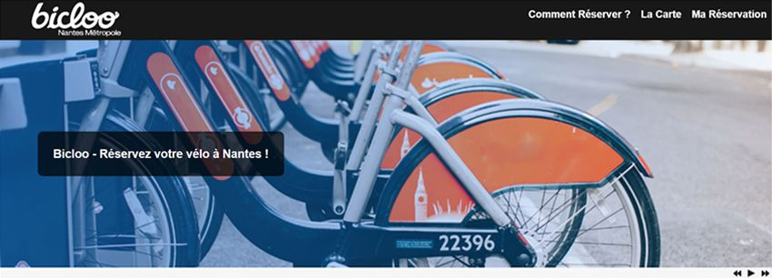
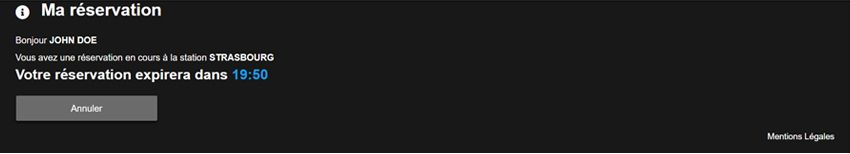

Bicloo - Reservation de vélos
Création d'une application web de réservation de vélos via API
Pour ce troisième projet il fallait créer une application web permettant la réservation d'un vélo dans une ville donnée selon les informations récupérées en temps réelle despuis l'API JCDecaux.
Ce projet avait pour but la découverte du langage JAVASCRIPT et la PROGRAMMATION ORIENTEE OBJET.
Cahier des charges :
- Page de type "Single page Application" simulant la réservation de vélos dans une ville
- L'utilisateur doit pouvoir réserver un vélo depuis son navigateur
- La réservation est alors temporairement enregistrée sur le navigateur du visiteur
- Cette application doit afficher une carte avec la liste des stations de location de vélos disponibles dans la ville
- Diaporama :
- Afficher photos et textes expliquant le fonctionnement de l'application
- Défilement automatique
- Fonction play/pause/next/preview
- Carte des vélos :
- Affiche en temps réel la liste des stations de location de vélos ainsi que leur disponibilité.
- La localisation de toutes les stations de vélos est affichée à l’aide de marqueurs.
- Les données proviennent de l'API JCDecaux en temps réel
- La carte doit être générée dynamiquement via un service de cartographie
- Réservation d'un vélo :
- Il doit être possible de réserver un vélo disponible à la station sélectionnée en indiquant son nom et son prénom et signant dans un champ libre implémenté à l’aide de l’API HTML5 Canvas
- Les données de réservation seront stockées dans le navigateur à l’aide de l’API Web Storage et affichées en dessous du panneau
- L'état de la réservation est affiché avec un décompte dynamique du temps restant avant expiration de la réservation
- Une réservation expire automatiquement au bout de 20 minutes et également lorsque le navigateur web se referme
- Le nom et le prénom sont toutefois conservés par le navigateur pour préremplir le formulaire de réservation lors d'un prochain usage, même si le navigateur a été fermé
- Il ne peut y avoir qu'une réservation à la fois. Si une nouvelle réservation a lieu, elle remplace la précédente
Maquette :
{kind=link}


{kind=link}